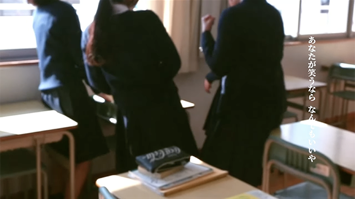
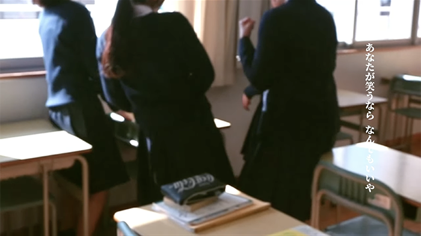

卒業式ムービー制作
高校は普通科に在籍しており、卒業制作はありませんでしたが自主的に制作し、先生にお願いして、卒業式の開始前の待ち時間で上映していただきました。
卒業式後、学校のYouTubeに載せていただいています。
 

クライアント
-----
担当した作業
企画・撮影・編集
制作期間
2023.12.30 -2024.3.4
使用したソフトなど
AviUtl
注意・工夫した点
違う機種のカメラを使って撮影したため、色味が違う動画が撮れましたが、音やシーンの切り変わりに合わせて使うなどの工夫をしました。また、顔を映さず、セリフなしで撮ることで、自然な日常の思い出が撮れるように工夫をしました。
課題
制作中に小道具を使うなど、さまざまなアイデアが出ていましたが、すべてを反映することはできなかったので計画を立 てて進める事が大切だと感じました。